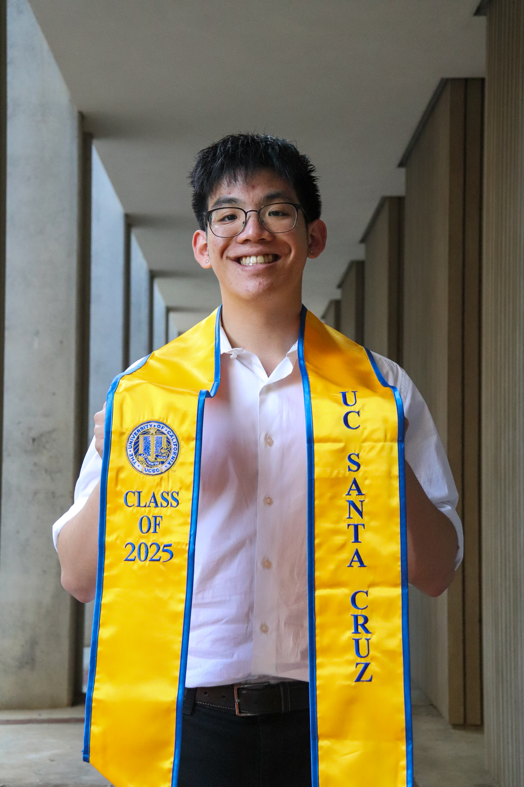
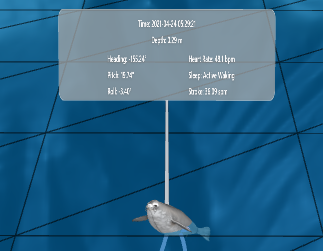

Hi! My name is Erik Chao.
Graduate Student @ UC Santa Cruz

I’m a developer passionate about creating programs that are simple and accessible to use. My work
focuses on blending usability and design to build thoughtful, user-centered experiences.
My interests align with computer graphics, extended reality, and human-computer
interaction—fields
that lets me combine creativity with problem-solving.
I’m currently pursuing a master's degree in Computer Science at the University of California,
Santa
Cruz.
When I’m not at my computer, you can find me playing the guitar, baking banana bread, or going
on
long walks.
Skills
Programming Languages
JavaScript, Python, SQL, C++, HTML, CSS
Libraries & Frameworks
React, Next.js, Three.js, Express.js
Tools & Platforms
Git, Vercel, Mailchimp, Adobe Lightroom
Projects
-
- Improving path rendering speedup by 80% when loading onto the website.
- Developed a sliding interface to for seamless playback of recorded data.
-
Three.js
-
JavaScript
-
Python

"Diving with Seals in VR": A Research-through-Design Project with Marine Scientists Towards Collaborative Scientific Sensemaking"
Developed in the Social Emotional Technology (SET) lab at UC Santa Cruz under Dr. Katherine Isbister and PhD student Samir Ghosh. The Seals project is a VR experience in Three.js that allows multiple users to interact with elephant seal paths around Monterey, CA. Through the interaction, you can view the current depth, heart rate, and their current sleep cycle stage the seals were in.
My contributions to the project includes:-
React
-
Google
-
Vercel
QR Validator
A web app that validates data stored in a Google Sheet. It reads the unique ID embedded in each QR code and cross- references it with entries in the spreadsheet. Can be used as a real-time validation.
Experiences
-
Sept 2024 - Dec 2024
Artificial Intelligence Tutor -
Baskin EngineeringAssisted students in learning key AI concepts using UC Berkeley's Pac-Man AI Project. Hosted online office hours to provide students with support outside of class. Provided debugging support for students.
-
Python
-
-
Sept 2024 - Dec 2024
Outreach Coordinator -
Korean American Student
AssociationReinstated a weekly newsletter system for members to be updated with the latest news. Established partnerships with catering vendors to expand fundraiser options. Worked with a team to organize and lead general meetings, while engaging with general members.
-
Mailchimp
-